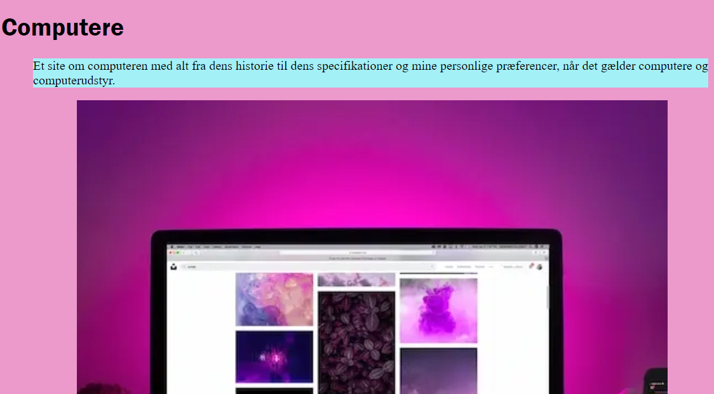

Tema 2 - Grundlæggende web
Tema beskrivelse
I denne opgave skulle vi lære at kode vores første site med html og css. Sitet skulle være responsivt og kodes moblie first. Vi fik udleveret alt materiale så som wireframe, layoutdiagrammer og billeder, som skulle indgå på sitet. Udover det, var der frit spil til at bestemme farver, fonte og hvilke billeder, der skulle være på hvilke sites. I dette tema skulle vi også prøve at bruge Filezilla for første gang, til at upload vores projekter til mit domæne, så andre kan tilgå det.
Konklusion på tema
Med dette tema lærte jeg at arbejde med grids i css og html for første gang. Jeg lærte også hvilken slags css, der er god til at bruge på billeder, når et site skal være responsivt.